| Eclipse Corner Article |

Summary
Model-driven software development (MDSD) is not just about generating code. Several additional challenges have to be mastered. These include: how to get usable graphical and textual editors for your domain specific language (DSL), how to validate your models against your metamodels, how to define model modifications and transformations and finally, how to write scalable, maintainable and extensible code generators. In this article we show how to tackle all these challenges, based on a collection of open source tools: Eclipse, Eclipse Modeling Framework (EMF), Graphical Modeling Framework (GMF) as well as openArchitectureWare. We believe that this tool chain provides a proven and stable stack for making MDSD a practical reality.By Markus Voelter, Bernd Kolb, Sven Efftinge, and Arno Haase, all Independent Consultants
June 15, 2006
For model-driven development it is essential that we provide an end-to-end tool chain. The following challenges arise:
Note that in this article we're not going to address issues such as why you would want to do model-driven software development (MDSD) at all, which advantages it has, how you'll have to organize your project, etc. If you're interested in these aspects (which we assume you already know for this article), we recommend reading [SV06]. We assume that you consider MDSD to be useful – and based on that, we'll show you how to do it effectively with today's tooling.
Our example is based on state machines. Everybody knows state machines, so this sounds like a reasonable example. We will start by defining a metamodel for state machines. This will be based on the UML metamodel. We use Eclipse Modeling Framework (EMF) to define it. We will then build a graphical editor for state machines using the well-known UML-based notation; for this task we'll use the Eclipse Graphical Modeling Framework (GMF) framework. We will then add additional constraints (e.g. "states must have unique names"). To make things more convenient, we'll use the oAW Checks language and integrate it with GMF. Next up will be a code generator that creates an implementation of state machines in Java. We use oAW's xPand language. We'll then create a set of recipes that help developers with the implementation of the actions associated with states – this illustrates the problem of integrating generated and manually written code. We will then cover model-to-model transformations and model modifications using oAW's xTend language. Finally, we will build a textual editor for rendering the state machines textually using oAW's xText framework.
Note that all the code is available from http://www.eclipse.org/gmt/oaw/doc/s10_gmfAndOAW_src.zip
The metamodel for state machines is probably well-known. A state machine consists of a number of states. States can be start states, stop states and "normal" states. A transition connects two states. States know their outgoing and incoming transitions. We also support composite states that themselves contain sub state machines. A state machine is itself a composite state. A state has actions. Actions can either be entry or exit actions. Here's the UML diagram for that metamodel, rendered with the GMF Ecore Modeler.
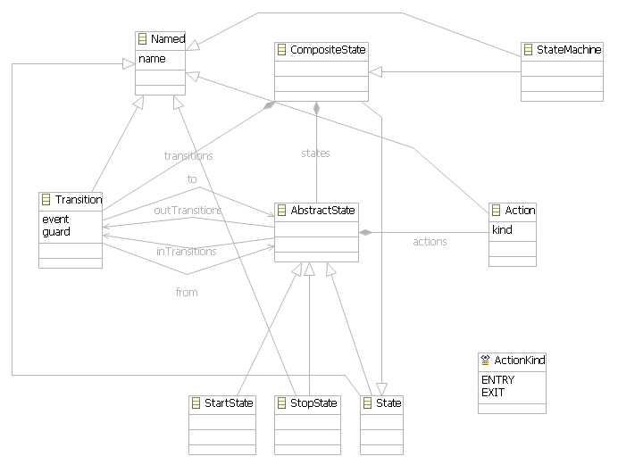
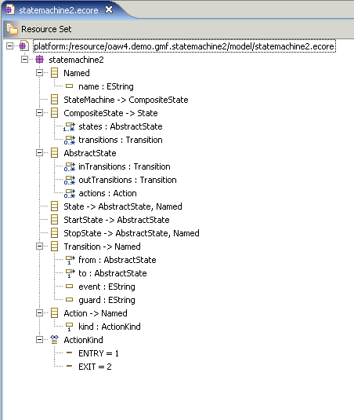
In the properties view, as shown in the next screenshot, you can adjust the properties of the metamodel elements.
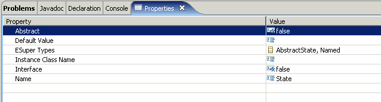
You can find the metamodel in the oaw4.demo.gmf.statemachine2 project.
To do useful work with this metamodel, we have to generate a number of artifacts (note that you could in theory work with dynamic EMF models, but for our case (GMF, Recipes, etc.) this will not work). First of all, you need to generate the genmodel. This is basically a decorator model (or a marker model) around our metamodel that "decorates" a number of extra properties on top of it. The yellow area in the following screenshot shows the genmodel file. If you're familiar with EMF you'll know how to generate it; if you're not familiar with EMF it's not important here.
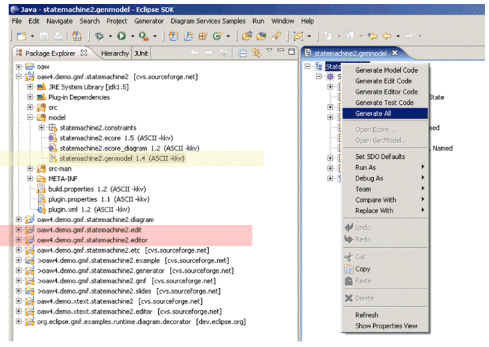
Once you have generated the genmodel, open it, select the root element, and execute Generate All from the context menu. This is what will be generated:
As of now, there's no reason to look into any of these models or projects in more detail. You just have to make sure they're there.
Building a graphical editor for your own DSL is probably the most complex and intricate of the steps of this tutorial. This is for two reasons. The first reason is that this tutorial has been written before GMF was finalized. So there are still a couple of glitches in the software (to get an updated tutorial, see [GmfTut]). The second reason is that building an editor is simply non-trivial! Before GMF arrived, you had to do it manually with the Graphical Editing Framework (GEF) which was a very daunting task (unless you'd write your own generator, as in [RV05]). Before even GEF, building a custom editor was not a viable alternative for most projects at all. So, GMF really is a huge step forward. And the remaining complexity is actually a joke, compared to what you'd have had to do pre-GMF. So let's get started.
For building a GMF editor (as shown in the next illustration) you start from your metamodel (the .ecore file) and the .genmodel defined above. We assume that these are already there. Also, the .edit and .editor projects generated from them are also assumed to be available.
To get us a step further, a number of additional models have to be defined (we'll look into each of the later):
Take a look at this illustration to understand how those models fit together. From all of these additional models, GMF creates the .gmfgen model – again a "low level" model that the code generator uses as an input, finally creating the .diagram project which contains your desired editor.
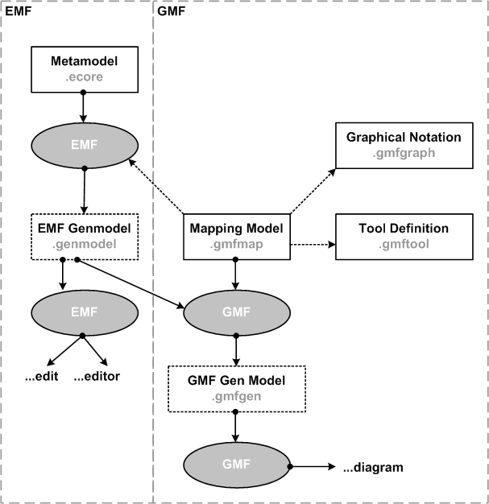
We use another project for the GMF models from which we'll create the editor: oaw4.demo.gmf.statemachine2.gmf. This project contains all the additional models just talked about. Here's a screenshot.
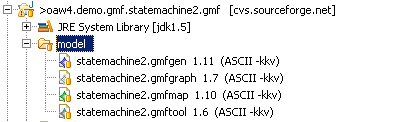
The .gmftool model defines – in our example – only a set of palette entries. The palette is the set of buttons (usually) on the right of an editor that allows you to add model elements to your model. So we need a creation tool for each of the metamodel elements that we want to be able to place onto the editor.
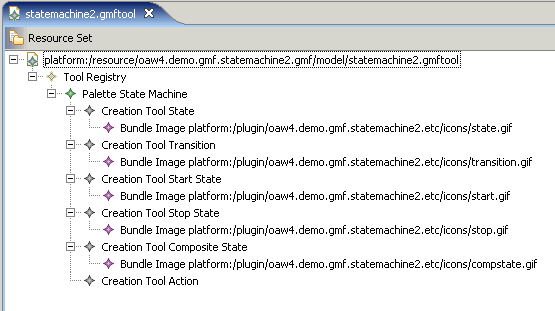
We also assign icons to each of the of the creation tools. Note that we don't need a creation tool for the state machine itself, since the state machine will be represented by the editor itself (more specifically, it's Canvas).
The graph model defines several (relatively separate) things.
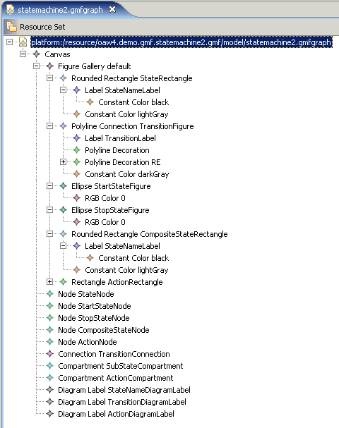
Looking at the screenshot above, you can see Nodes named after the metamodel elements we're going to map in a minute. In the properties (which you can't see here) we connect the Node elements to the respective figures; for example, the StateNode is associated with the StateRectangle.
This is the most complex model. Here we map the tool definition and the graph definition to the domain metamodel. For example (see the green part in the next screenshot) we map the normal States. We'll explain this mapping in some detail. To be able to actually map the various elements, you have to add these other Resources to the editor (see the yellow parts in the screenshot):
All of this has to be mapped with a number of properties; the editors for doing that are – as you can see – just the usual tree editors, which makes all of that stuff a bit cumbersome. There are additional, more specialized editors in the GMF pipeline that should make this process simpler (Some of the more specialized editors and wizards seem not to work that great at the time of this writing, or, more specifically, don't always provide the detailed level of control you'll need, so we use the tree editors).
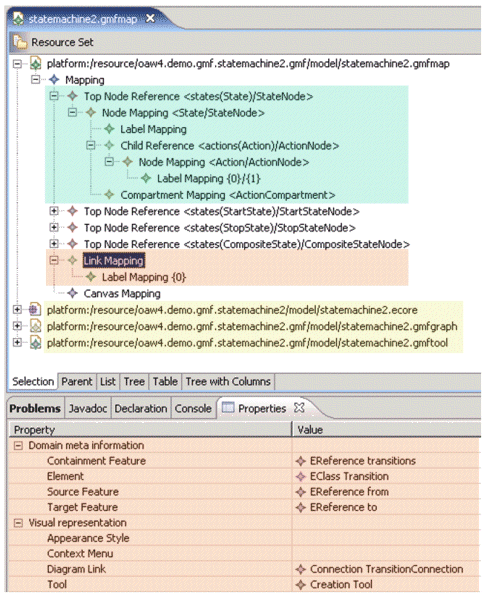
The red part in the screenshot is a mapping of a link, links being the mappings of the edges of the graph. In the properties view, you can see some of the parameterization of the respective link:
That (and a number of details we didn't show here) finalizes the model definitions for GMF.
We now create the .gmfgen model from the set of models we just created (see the conceptual diagram above). From that, we can actually generate the diagram code – this will be contained in the .diagram project.
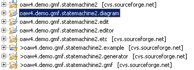
As usual, when generating editor plug-ins inside an Eclipse workspace, we have to use one of two possible ways to see the result:
The following screenshot shows the running editor with an example state machine (a CD player) in the editor. This example state machine is located in a project called oaw4.demo.gmf.statemachine2.example.
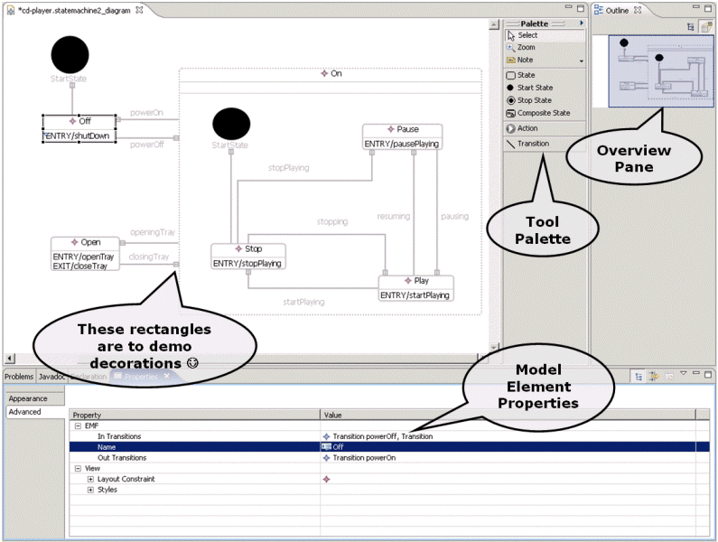
Constraints are rules that models must conform to in order to be valid. These are in addition to the structures that the metamodel defines. Formally, constraints are part of the metamodel. A constraint is a boolean expression (a.k.a predicate) that must be true for a model to conform to a metamodel.
Constraint Evaluation should be available in batch mode (when processing the model, see below) as well as interactively, during the modeling phase in the editor we just built ... and we don't want to implement constraints twice to have them available in both places!
For defining constraints, functional languages are often used, OCL is the language of choice in the OMG/MOF/UML environment. As a consequence of the better tooling, we'll use openArchitectureWare's Check language. This language is very much like OCL. In fact, you'll probably not notice the differences in the examples that follow.
Since the constraints are conceptually part of the metamodel, we'll put the constraint definitions into the metamodel project, see the green area in the following screenshot.
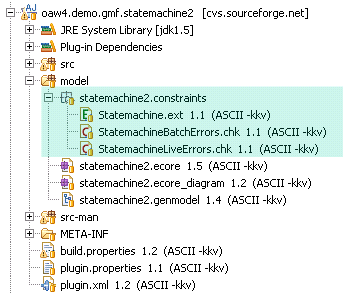
As can be seen from the screenshot above, constraints are implemented in .chk files. openArchitectureWare comes with custom-made editors for the .chk files. The editors provide metamodel-aware code completion as well as error checking. The following screenshot shows a couple of constraints.
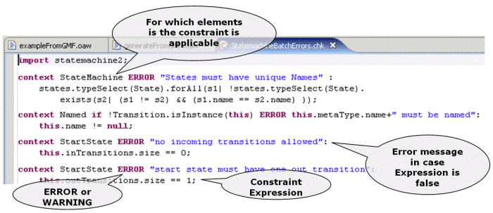
To see the power of the functional constraint language, you should take a look at the "States must have unique Names" constraint:
To show off the editors, here's a screenshot of the editor in action :-)
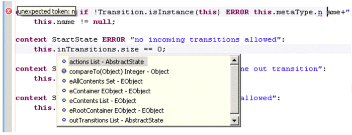
By default, the GMF-generated editor obviously doesn't know about oAW. To make the GMF generated editors evaluate our constraints, we needed to tweak things a little bit; most of this is in oaw4.demo.gmf.statemachine2.etc project.
First of all, we wrote our own ConstraintEvaluators (a GMF/EMFT concept) and plugged in the oAW CheckFacade (the facade for oAW's constraint check system). We then used AspectJ to weave in the necessary notification adapters into the generated EMF Factory class (we really didn't want to modify the generated EMF classes!). We wrote a watchdog that does the batch evaluations whenever the model has changed (with a delay of two seconds). This relieves you from having to press the Validate button over and over again. Note that all of this stuff is actually part of the oAW/GMF integration package (released with oAW 4.1) so you don't have to care about the details.
So what remains to be done for you as an editor developer is the following steps. First of all, you have to write a constraint class that loads the constraint file we wrote above.
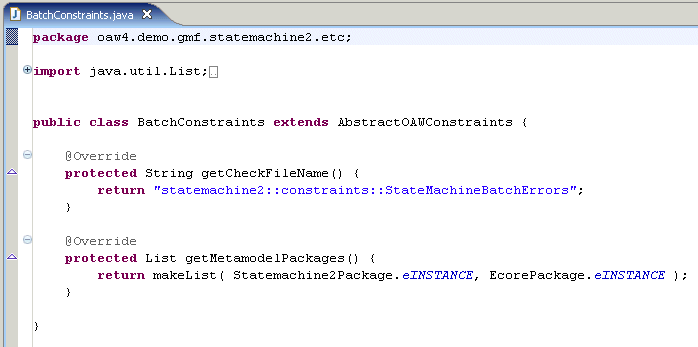
You then have to plug these constraints into the EMF Validation Framework's constraintProvider extension point, as shown in the next screenshot.
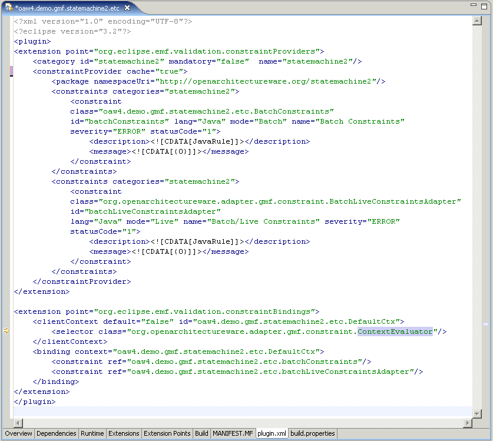
Finally, you have to make two important adjustments in the .gmfgen model (yes, to the generated .gmfgen model!), as shown by the green areas in the following screenshot.
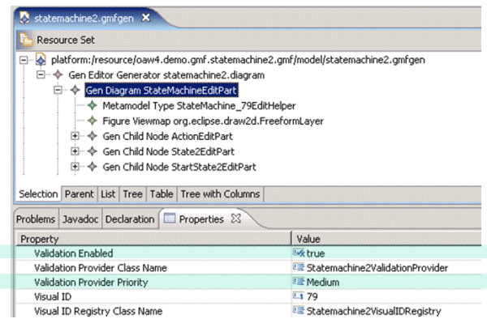
Once you did all this you should be able to rerun the editor; you should get error messages right after (actually, 2 seconds after) you did something illegal, as per the constraints.
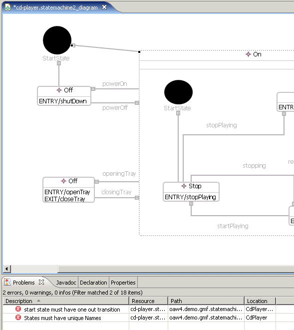
Code Generation is used to generate executable code from models – usually the final result we want to get to. Code Generation is based on the metamodel and uses templates to attach to-be-generated source code. In openArchitectureWare, we use a template language called xPand. It provides a number of advanced features such as polymorphism, AO support and a powerful integrated expression language. We will show most of these features here.
Templates can access metamodel properties seamlessly, as shown in the next illustration.
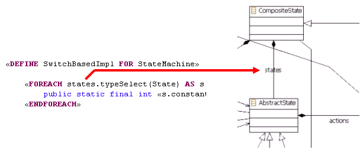
The code on the left is a template. Blue stuff is code that will be written to the to-be-generated file. The capitalized, purple code are template control structures such as FOREACH, IF or DEFINE (which I'll explain later). Finally, the black code is code that accesses the metamodel, as well as expressions involving metamodel properties. The expression states.typeSelect(State) can be explained as follows:
To complete this one, the FOREACH statement iterates over the result of the expression, assigns the current iterated element to the temporary variable s, and then executes the body of the FOREACH...ENDFOREACH block – which is generating some public static final int attribute.
What kind of code will be generated? How do you implement a state machine? You should think about what you want to generate before you start writing a generator. There are many ways of implementing a state machine: GoF's State pattern, If/Switch-based, Decision Tables or Pointers/Indexed Arrays.
We will use the switch-based alternative. It is neither the most efficient nor the most elegant alternative, but it's simple. For more discussion of this topic, see Practical State Charts in C/C++ by Miro Samek [MS02]. So here's the outline of the code we want to generate:
The generator is located in the oaw4.demo.gmf.statemachine2.generator project. There are a number of code generation templates (green area in the following screenshot). Extensions are also defined (purple area). There are also workflow files (.oaw) that control the workflow of a generator run (orange area). Different workflow files contain different "parts" of the overall generator run and call each other. Workflow files are in some small way like ant files.
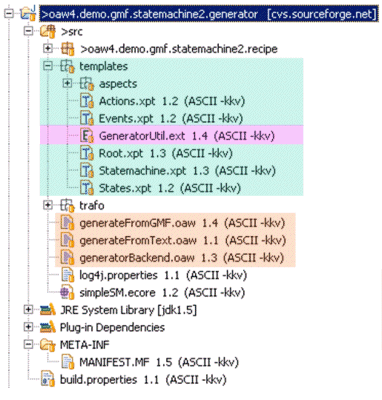
Here's an example template with a couple of annotations that explain what happens. Note that the template language uses a very "clean" syntax, using French quotation marks (for which the editor provides keyboard shortcuts :-)).
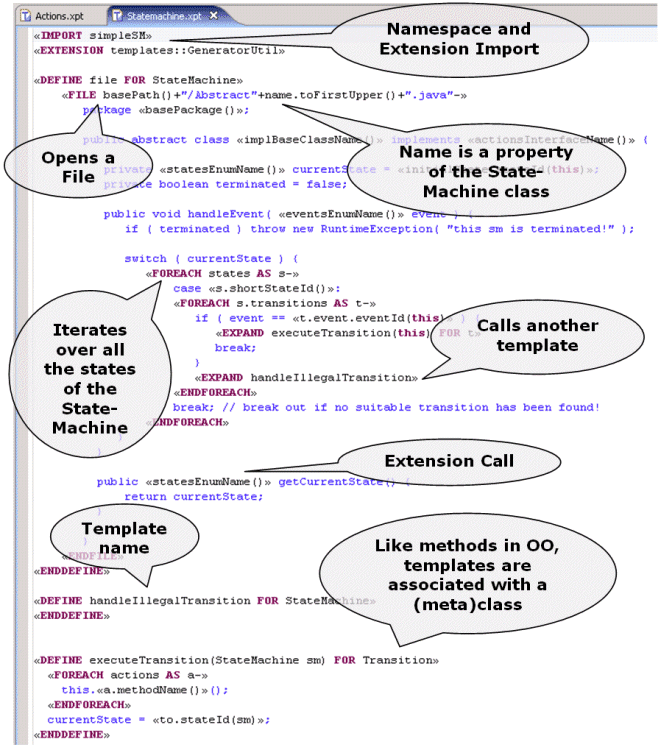
Often, in the templates, you'll need additional properties on your metaclasses that are not defined in the metamodel itself. Examples are things such as a state machine's file name, the name of a state, in all-uppercase, to use as a constant, and other similar things. To keep the metamodel clean, these properties should not be defined in the metamodel itself (those properties aren't part of the problem space, rather, they are "helpers" useful for code generation). This argument becomes especially obvious if you consider the situation where you'd generate code for various target languages (say, Java, C++ and XML) from the same model. In that case you'd pollute your metamodel with all kinds of helpers.
To avoid this, you can define extensions. Extensions can be called using member-style syntax: myAction.methodName(). Extensions can be used in xPand templates, They are imported into template files using the EXTENSION keyword. Check files, as well as other Extension files can also import extensions. Here's an example.
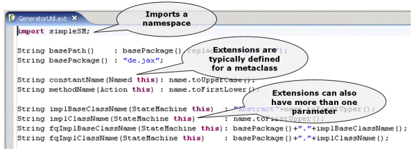
Extensions are written in oAW's expression language (the same language you used in the constraint checks). If, for some reason, the expressive power of the expression language is not enough, you can also escape to Java code.
A workflow definition is necessary to define the sequence of steps the generator executes in order to do something useful. In this first example, we need to execute the following steps: read the model, verify it (i.e. verify the same constraints we verified in the interactive editor) and generate code.
Below is a screenshot of this simple workflow file. Workflow files are XML files that contain a number of workflow component declarations. Each workflow component declaration specifies the component class (such as oaw.emf.XmiReader) and a number of configuration properties. Note that you can use ${propName} notation as variables, just as in ant.
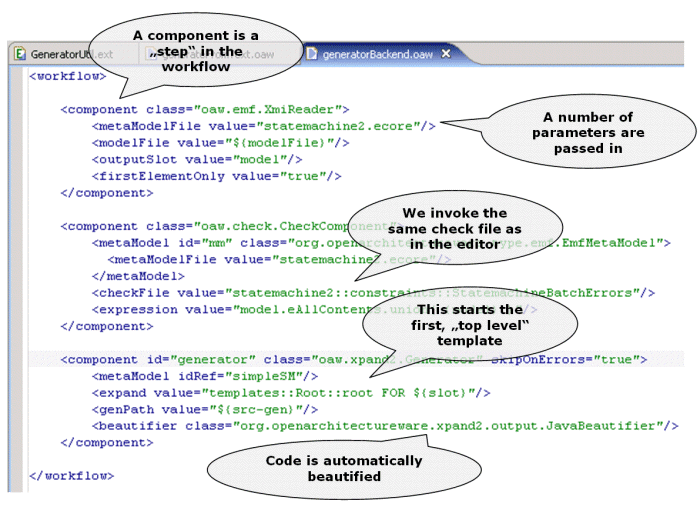
Just to recount: the CheckComponent in step two executes exactly the same constraints checks (the same .chk file) as the editor! There is something to be said about the expression model.eAllContents.union( {model} ). Basically what it does is that is returns a collection of all children of the element in the model slot, unioned with the element in the model slot itself. eAllContents is an Ecore primitive that returns all the children of an element, recursively, but not the element itself. Since we want all elements of the model, we have to union the children set with the set that contains only the model element itself. {...} is the literal set constructor in the oAW expression language.
Also note that the generator component has the property skipOnErrors set to true. This means that this component is not executed if there are already errors in the workflow context, for example as a consequence of constraint checking in a previous step of the generator run.
There's a bit more to be said about project organization. The variable ${modelFile} points to the actual file we want to generate. Now, the name of this file is something we cannot define as part of the generator project, since it's specific to the application. Remember that a generator is typically used in many applications! So, the workflow file we just defined is almost like procedure we'd like to call from somewhere else – from the application project, and that's also the way how we supply the value for the modelFile variable.
So, inside the oaw4.demo.gmf.statemachine2.example project (that's the one where we'd "drawn" the CD player state machine) there's another workflow file, that looks like so:
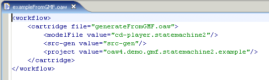
As you can see, it defines a value for modelFile and then calls the original workflow file using the cartridge file="..." construct.
If you run that one, you'll see the code for the example state machine being generated into the src-gen folder in your example project.
Consider somebody gave the generator we developed above to you, or you'd downloaded a "state machine cartridge" from somewhere. Now you notice that you want to adapt the code generator somehow, for example, you want to add log output, or you want the state machine to throw an exception if an event arrives which the state machine cannot handle in the current state (as opposed to just ignoring it, as it happens in the current implementation).
How can you do that? How can you adapt the code generation process to your needs without hacking the existing templates? Well, aspect orientation provides a solution here, and openArchitectureWare supports aspect-oriented templates.
Here's (almost all) of the code that's necessary to achieve that.
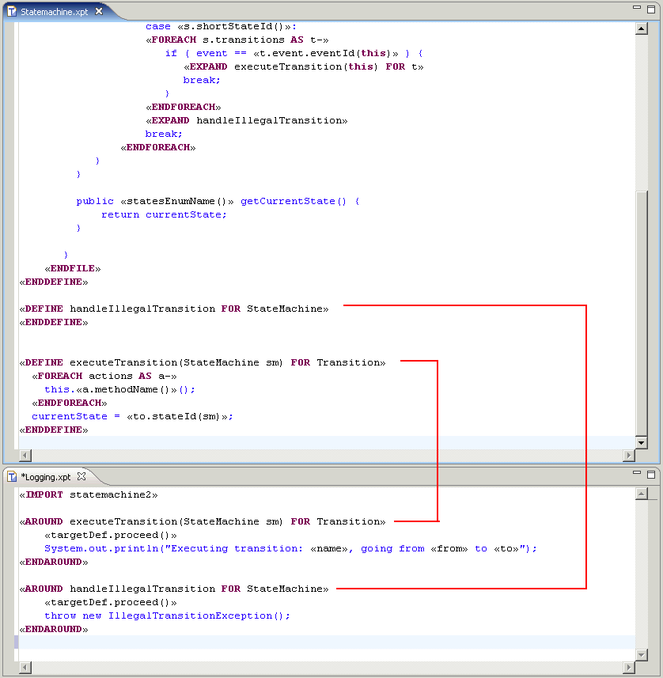
AROUND templates advice existing templates; you can use all kinds of wildcards to define the pointcut (i.e. the template to be advised). The joint point model is limited to template executions, so if you want to be able to advice a certain location in the template, you need to make sure that there's a DEFINE..ENDDEFINE block around it. In the worst case, you as the writer of the original templates have to add dummy templates (such as in the handleIllegalTransition case). This is the very same situation as in OO programming; in order to overwrite a piece of code in a subclass, this piece of code has to be modularized into a method (you can't override line 3 to 11 of a given method!). In AO this is fundamentally the same, however, the granularity of what you can advice depends on the joint point model. Most AO systems use method-level join points only (the equivalent being the template in our case); only AspectJ has some finer grained join points.
To actually execute the templates, you have to tell the generator component that they are available. Now, the problem is, that the workflow file might also have been written by "the other guy" and you can't or don't want to change it. So what you need to do is to advise an existing component declaration and add the necessary properties. Fortunately, you can do this, too, the workflow engine also supports advices. Without going into all the detail (which you can find in the docs to openArchitectureWare), you can add the following code to the example workflow file (assuming, here, that the logging stuff we wrote above is specific to the example project):
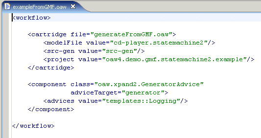
In the second component declaration, you use a GeneratorAdvice component and identify the target of the advice (the pointcut, so to speak) with the adviceTarget property. It identifies the original component by its name (if you go back to workflow file we showed, you'll see that the generator component had the ID "generator"). The semantics of the advice component is, that the properties added to the advice component will be "transferred" to the adviceTarget. So, in this case, this adds the <advices value="templates::Logging"> property to the original generator component, which, in turn, tells it about the template aspects. That's all you need to do.
A final word on AO: Consider how useful this feature will be if you're building families of code generators, for example in embedded systems, where you'll often need to generate code for a number of (related) target platforms. Most of the code will be the same for all of those platforms; however, parts will be specific to the processor or OS abstraction layer, or whatever. You can then put all the common code into a set of templates and have the specifics organized into a set of AO templates, everything nicely modularized and organized!
In most scenarios, it is not useful, from a pragmatic point of view, to generate 100% of the application code. For example, in our state machine example, we don't generate the implementation of the actions (the code that is executed upon entry or exit of a state). This has to be written manually, and integrated with the code that has been generated.
Since we don't like to use protected regions for various reasons (yes, openArchitectureWare supports them :-)), we need some other means. The next illustration shows a couple of alternatives such as inheritance, factories, template methods, etc.
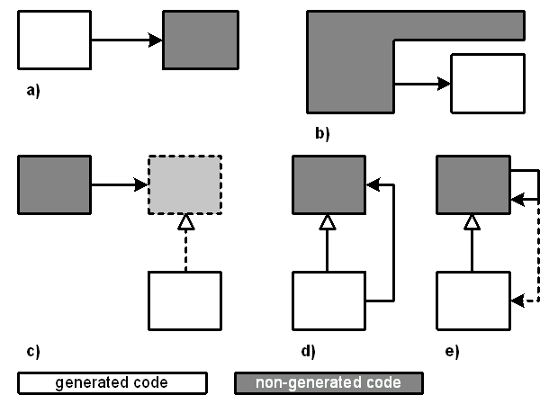
The problem that arises here is as follows: application development is not yet finished once the generator has terminated! Developers have to add the manual code in the right way. However, the generator cannot help developer "do the right thing" here, since it has already terminated! What you'd want is somebody telling the developers something like "hey, you have to add this action implementation to make the system complete". And of course, once you've added that code, that somebody should shut up and not bother you with the reminder :-)
Well, that's exactly what you can do with the Recipe framework. It provides a task-based approach to "completing" the generated code with manual parts. This works the following way:
For example, in the state machine case, actions must be implemented in subclasses of the generated state machine implementation. Let's look at the effects:
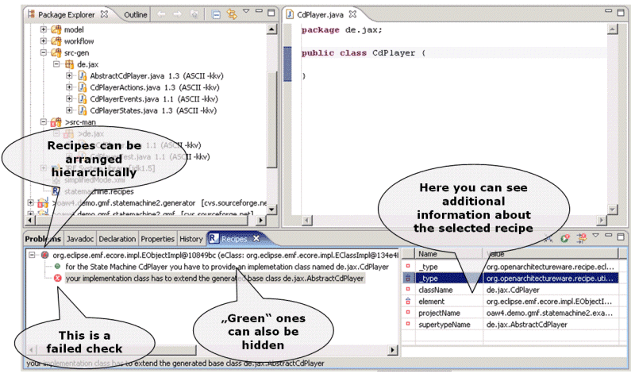
The code generator created a class AbstractCdPlayer (since the state machine was named CdPlayer in the model). We've already written a class CdPlayer (which is the required name for the implementation class) but we did not yet extend the base class. So the recipe check that verifies the existence of the CdPlayer class is green; the check that verifies that it has to extend the AbstractCdPlayer base class is still red. So you know what you need to do. Once you add "extends AbstractCdPlayer" to your class definition, and save it, the red mark will get green.
Of course, then we'll get a number of compiler errors, because I have to implement the action methods. We decided not to provide a separate recipe check for each of them, although we could have done that.
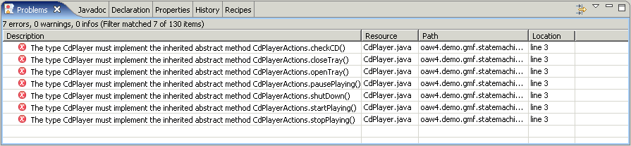
Implementing Recipes is a two stage process. The first stage is to implement the elementary checks (such as class has to exist, or that a class has to extend a certain superclass). oAW comes with a number of predefined recipe checks for Java, you can also define your own checks, e.g. to verify C++ code.
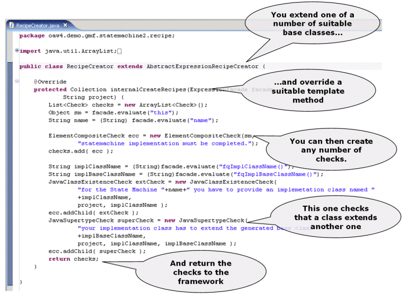
The next step is to instantiate the checks as part of your workflow and write them to the external file which Eclipse can then load to validate the checks against the code base. To do this, we write a workflow component that does the work. Here's the code.
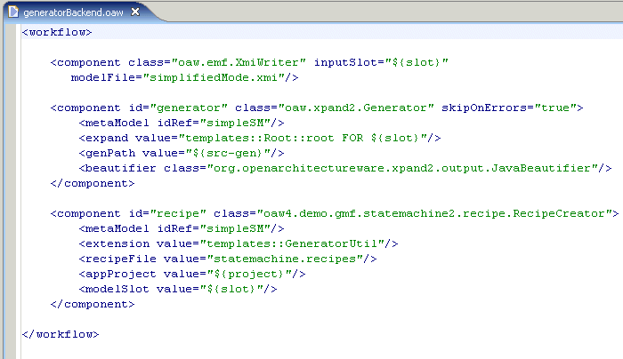
Model modifications are a form of model transformation, where the source model is also the target model, i.e. the original model is modified. There's also model transformations, where one or more output models are created from one or more input models, leaving the inputs unchanged. Both of these tasks can be accomplished with oAW's xTend language, as we'll see. Alternatively, you can use any other EMF-based transformation engine, such as MTF or ATL.
So what kind of modification would make sense? We decided to add an emergency shutdown to our state machine. So, we'll have to add an additional state (emergency stop) and a transition from each (normal) state to this emergency stop state. As usual, we have to do two things: write the transformation and plug it into the workflow. Here's the code for the transformation:
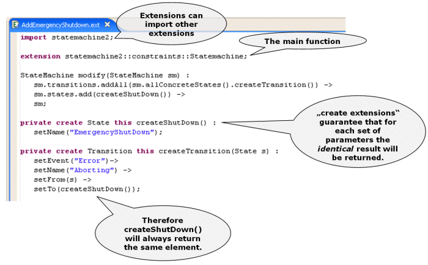
There's a very interesting detail hidden in there: If you look closely, you'll find that createShutDown() is called several times; once from the modify(...) function, and then again from each of the createTransition(...) invocations. So, will we end up with several new States? The answer is no. The really cool thing about create extensions is that, for each set of parameters, it is evaluated only once. Subsequent invocations with the same set of parameters will return the identical object, the function is not reevaluated! So, since createShutDown() has no parameters, and thus, each invocation automatically is with the same set of parameters (the empty set) the createShutDown() function is executed only once. So each of the several invocations returns the same object. This is exactly what we want!
The createTransition(...) function takes one parameter, the state for which is should create the transition to the emergency stop state. Note how the properties (event, name, from state and to state) are set. This extension is called and evaluated once for every state – again, exactly as we need it.
Now, to make this transformation execute, we have to add something to the workflow file:
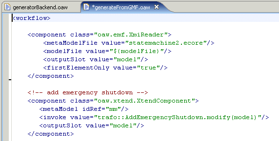
The XtendComponent is told the metamodel as well as – and this is important – the initial expression to evaluate. trafo::AddEmergencyShutdown.modify(model) will invoke the modify operation in the AddEmergencyShutdown.ext file (By the time you read this, the delimiter between the file and the function (which is currently a dot) will probably have been changed to ::, which is the otherwise standard namespace delimiter in oAW.), which is in the trafo package (remember that oAW loads all resources from the Java classpath). The term "model" is the name of the slot into which the reader (see the component above the XtendComponent) has put the model's root object.
Model modifications and transformations can be a bit tricky. As of now we don't have debug support available (although we're working on it). Consequently, it is essential to test such a transformation. How to you do this? We won't show the code, just outline the process:
There's something we hadn't told you yet, and you probably didn't notice it either. And that is that the code generation templates aren't based on the same metamodel as the GMF editor. We could have based them on that same metamodel, and often that's a good choice, but to demonstrate model transformation, we added an "intermediate" model.
So this intermediate metamodel is actually considerably simpler but contains all the necessary information to generate the code. Here's a screenshot of the simplified metamodel.
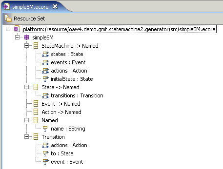
As you can see, the inheritance hierarchies are removed, actions are restructured to be owned by the state machine, the bidirectional associations between states and transitions are removed, we have no composite states anymore, etc. etc.
Obviously, we need a transformation that transforms the model we created in the GMF editor to a model that is an instance of that new metamodel. Here's the transformation.
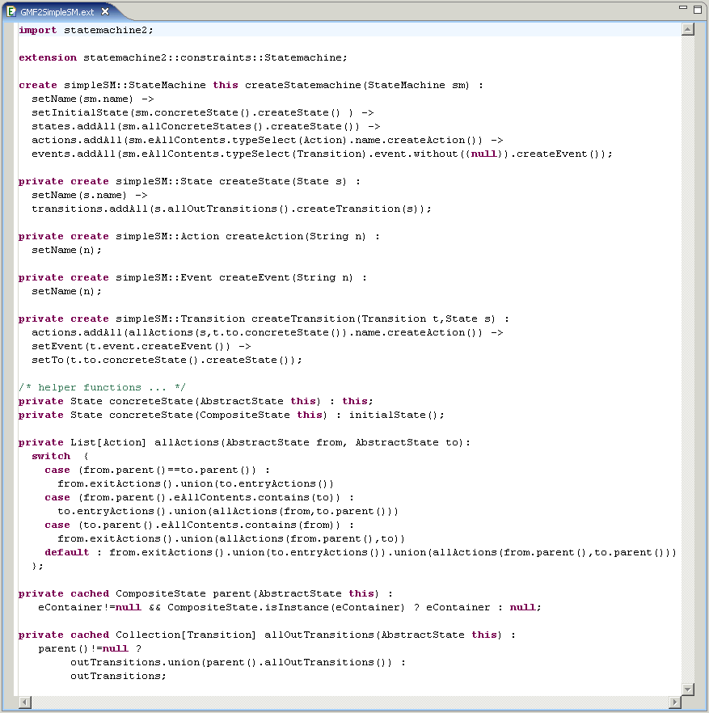
There are a couple of things in that file that are worth mentioning.
So as you can see the language used for model-to-model transformations is quite powerful and ready for practical use. This is even more true if you consider to metamodel-aware editor and the upcoming debugger.
It is not always useful to describe models in a graphical fashion. More often than you' d thing what you really want is a textual DSL. To make working with a textual DSL nice and easy, you'll probably want a nice editor for that language, one that features syntax coloring, real-time constraint checking and maybe even code completion. In short, you want the same level of convenience that GMF provides for graphical editors for your textual ones. xText can do that for you.
The xText Framework works as follows:
In the context of this example, we want to provide an editor for the simple state machine metamodel (the one to which the transformation above transforms). The process to get there is as follows:
So let's start with the definition of the syntax:
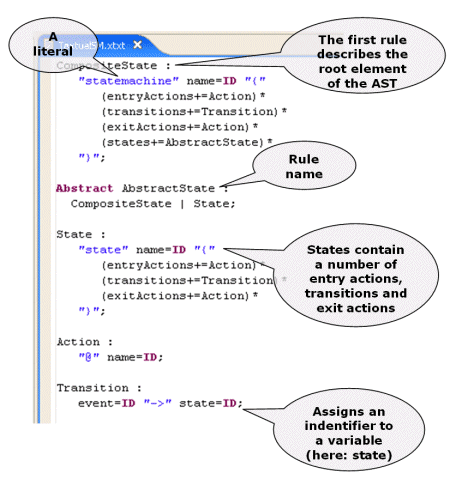
The Grammar language consists of two core abstractions: Rules and Tokens. Currently, the following token types available:
The main concept is Rules. Let's look at an example, the State rule from the above screenshot (the third paragraph). Each rule has a name (State). This is by convention the name of the corresponding AST type, so the generator will create a metaclass State. In our example, the concrete syntax for a state starts with the keyword state followed by an identifier (i.e. ID) which is assigned to the property "name" of the generated metaclass. Then an opening curly brace (i.e. "{") is expected. Next up one or more Actions (described in its own rule) are assigned to the reference entryActions. The '+=' operator specifies that entryActions is a list, and the Action should be added to it. Then one or more Transitions are added to the transitions reference, before the following actions are added to the exitActions reference. The description of a state is terminated using the closing curly bracket ("}").
As a consequence of this definition, the derivable (and thus, generated) metaclass State (also referred to in this context as AST type) needs to look as follows:
In addition to the rules that define concrete syntax (as shown above), there are also abstract rules. As an example, look at the AbstractState rule in the screenshot above.
An abstract rule (preceded by the Abstract keyword) will result in an abstract AST type (AbstractState). The body of the rule consists of a sequence of alternative rules (here: State vs. CompositeState). Since the AST types of the alternative rules (State and CompositeState) must be compatible with this rule's abstract AST type (AbstractState), the metamodel generated by xText automatically contains a corresponding type hierarchy. Also, xText normalizes the types (i.e. moves properties contained in all subtypes to the abstract super type). The derived metamodel of the state machine example shows how all the general features for State and CompositeState have been moved to there common super type AbstractState.
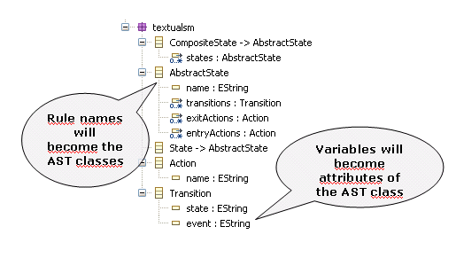
Note that the automatic generation of the AST metamodel is optional! You could design it manually, if you want to.
Of course, one piece of the puzzle is still missing: the constraints that should be validated in the editor haven't been defined yet. So let's do this; again, we simply write a .chk file, possibly accompanied by a set of extensions defined in an .ext file. Here's the metamodel (left side) and the defined constraints (right side).
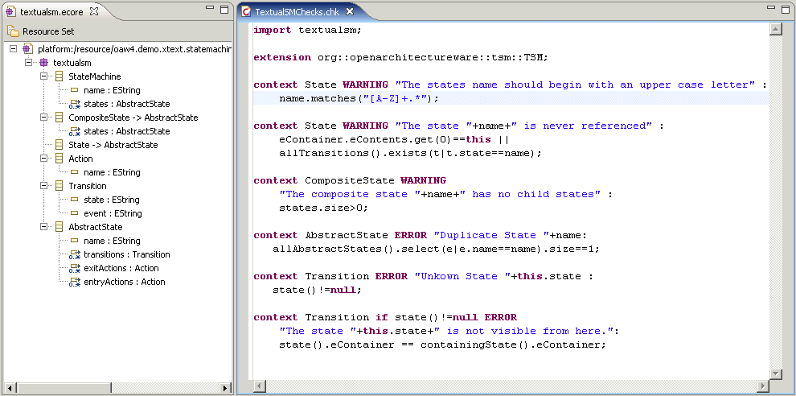
Let's look at the generated editor. As mentioned, it provides syntax highlighting and real-time constraint checking (constraints are evaluated once you save the file; this is the standard approach in Eclipse).
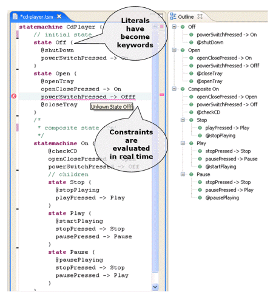
Just as we used the models created by GMF in the example generator, we also want to be able to use the textually described state machines in a generator workflow. Here's a workflow file that shows that one. Some explanations are in order:
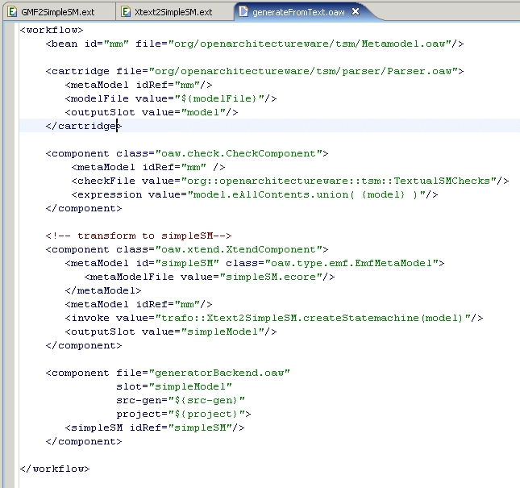
This wraps up our tour of Eclipse, EMF, GMF and openArchitectureWare. We have seen a complete tool chain, from front end to code. Note that all the building blocks are nicely modularized and reusable, and each comes with nice Eclipse editor support. Future enhancements of openArchitectureWare will be take place in all kinds of directions (see our development roadmap at [OawRm]); a particularly interesting area we are working on is debugger support. For more information on openArchitectureWare go to [Oaw].
We would really like to give us feedback. You can reach us through the URLs given at the top of the article.